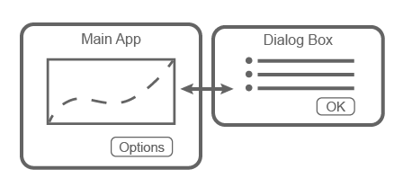
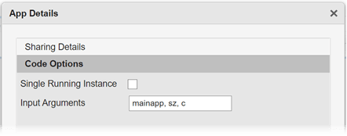

Create Multiwindow Apps in App Designer
A multiwindow app consists of two or more apps that share data. The way that you share data between the apps depends on the design. One common design involves two apps: a main app and a dialog box. Typically, the main app has a button that opens the dialog box. When the user closes the dialog box, the dialog box sends the user's selections to the main window, which performs calculations and updates the UI.

These apps share information in different ways at different times:
When the dialog box opens, the main app passes information to the dialog box by calling the dialog box app with input arguments.
When the user clicks the OK button in the dialog box app, the dialog box returns information to the main app by calling a public function in the main app with input arguments.
Video Walkthrough
For a walkthrough of how to create a multiwindow app in App Designer, play the video.
Overview of the Process
To create a multiwindow app, you must create two separate apps (a main app and a dialog box app). Then perform these high-level tasks. Each task involves multiple steps.
Send Information to the Dialog Box — Write a
StartupFcncallback in the dialog box app that accepts input arguments. One of the input arguments must be the main app object. Then, in the main app, call the dialog box app with the input arguments.Return Information to the Main App — Write a public function in the main app that updates the UI based on the user's selections in the dialog box. Because it is a public function, the dialog box app can call it and pass values to it.
Manage Windows When They Close — Write
CloseRequestcallbacks in both apps that perform maintenance tasks when the windows close.
To see an implementation of all the steps in this process, see Plotting App That Opens a Dialog Box.
If you plan to deploy your app as a web app (requires MATLAB® Compiler™), creating multiple app windows is not supported. Instead, consider creating a single-window app with multiple tabs. For more information, see Web App Limitations and Unsupported Functionality (MATLAB Compiler).
Send Information to the Dialog Box
Perform these steps to pass values from the main app to the dialog box app.
In the dialog box app, define input arguments for the
StartupFcncallback function. In Code View, in the Editor tab, click App Input Arguments . In the App Details dialog box, enter a
comma-separated list of variable names for your input arguments. Designate
these inputs:
. In the App Details dialog box, enter a
comma-separated list of variable names for your input arguments. Designate
these inputs:Main app — Pass the main app object to the dialog box app so that you can reference functions and properties of the main app from within the dialog box app code.
Additional data — Pass any additional data defined in the main app that the dialog box app needs access to.
Click OK.

In the dialog box app, add code to store the main app object.
First, define a property to store the main app. In Code View, in the Editor tab, select Property > Private Property. Then change the property name in the
propertiesblock toMainApp.properties (Access = private) MainApp % Main app end
Then, in the
StartupFcncallback function, add code to store the main app object in theMainAppproperty.function StartupFcn(app,mainapp,sz,c) % Store main app object app.MainApp = mainapp; % Process sz and c inputs % ... end
For a fully coded example of a
StartupFcncallback, see Plotting App That Opens a Dialog Box.
In the main app, call the dialog box app from within a callback to create the dialog box.
First, define a property to store the dialog box app. In the main app, in Code View, in the Editor tab, select Property > Private Property. Then change the property name in the
propertiesblock toDialogApp.properties (Access = private) DialogApp % Dialog box app end
Then, add a callback function for the Options button. This callback disables the Options button to prevent users from opening multiple dialog boxes. Next, it gets the values to pass to the dialog box, and then it calls the dialog box app with input arguments and an output argument. The output argument is the dialog box app object.
function OptionsButtonPushed(app,event) % Disable Plot Options button while dialog is open app.OptionsButton.Enable = "off"; % Get sample size and colormap % ... % Call dialog box with input values app.DialogApp = DialogAppExample(app,szvalue,cvalue); end
For a fully coded example of a callback, see Plotting App That Opens a Dialog Box.
Return Information to the Main App
Perform these steps to return the user's selections from the dialog box app to the main app.
In the main app, create a public function that updates the UI. With the main app open in Code View, in the Editor tab, select Function > Public Function.
Change the default function name to the desired name, and add input arguments for each option you want to pass from the dialog box to the main app. The
appargument, which represents the main app object, must be first, so specify the additional arguments after that argument. Then add code to the function that processes the inputs and updates the main app.function updateplot(app,sz,c) % Process sz and c ... end
For a fully coded example of a public function, see Plotting App That Opens a Dialog Box.
In the dialog box app, call the public function from within a callback. With the dialog box app open in Code View, add a callback function for the OK button.
In this callback, call the public function that you defined in the main app code. Pass the main app object, stored in the
MainAppproperty, as the first argument. Then, pass the additional data that the main app needs to update its UI. Finally, call thedeletefunction to close the dialog box.function ButtonPushed(app,event) % Call main app's public function updateplot(app.MainApp,app.EditField.Value,app.DropDown.Value); % Delete the dialog box delete(app) end
Manage Windows When They Close
Both apps must perform certain tasks when the user closes them. Before the dialog box closes, it must re-enable the Options button in the main app. Before the main app closes, it must ensure that the dialog box is closed.
With the dialog box app open in Code View, right-click the
app.UIFigureobject in the Component Browser and select Callbacks > Add CloseRequestFcn callback. Then add code that re-enables the button in the main app and closes the dialog box app.function DialogAppCloseRequest(app,event) % Enable the Plot Options button in main app, if the app is % still open if isvalid(app.MainApp) app.MainApp.OptionsButton.Enable = "on"; end % Delete the dialog box delete(app) end
With the main app open in Code View, right-click the
app.UIFigureobject in the Component Browser and select Callbacks > Add CloseRequestFcn callback. Then add code that closes both apps.function MainAppCloseRequest(app,event) % Delete both apps delete(app.DialogApp) delete(app) end
Example: Plotting App That Opens a Dialog Box
This app consists of a main plotting app that has a button for selecting options in a dialog box. The Options button calls the dialog box app with input arguments. In the dialog box, the callback for the OK button sends the user's selections back to the main app by calling a public function in the main app.